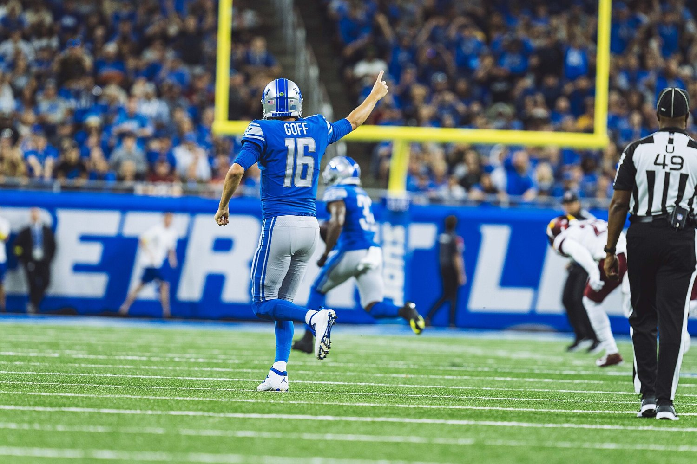

Bet
BetLions vs Panthers on Sunday Night Football: Jahmyr Gibbs Gets A Run Defense Allowing 193 Yards A Game, And Bryce Young Gets A Lions Secondary Without Brian Branch
Three weeks in, Detroit and Carolina look like mirror images with the strengths swapped. The Lions run the ball well and can't stop the pass, giving up 326.3 passing yards a game. The Panthers throw it all over the field and can't stop the run, giving up 193.3 rushing yards a game. That's the whole story of Sunday night in Charlotte, and the betting market has noticed: the total opened 45.5 at DraftKings and it's 51.5 now.

 Lions vs Panthers
Lions vs Panthers

Matchup Context
Detroit is 2 and 1, and every one of its games has turned into a shootout. The Lions beat New Orleans 31 to 30 at Ford Field in Week 1, lost 41 to 31 in Buffalo in Week 2, and beat the Jets 31 to 24 at home last Sunday. That's 31 points in all three games, and 95 points allowed across the three. Their games have produced 61, 72 and 55 total points.
Carolina is 1 and 2 and has been all over the map. The Panthers opened by losing 59 to 37 at home to Chicago, then went to Atlanta and won 34 to 3, then lost 21 to 18 in Cleveland. So the same team has played a 96 point game and two games in the 30s. Sunday night is only Carolina's second home game, and the first one ended with Chicago scoring 59.
This is Detroit's second road game. The first was the loss in Buffalo, where the defense gave up 41. The Lions still have the cleaner résumé: Jared Goff hasn't thrown an interception, Detroit has scored on every red zone trip, and ESPN's matchup predictor makes the Lions a 61 percent favorite.
Injury Report & Lineup Notes
Detroit Lions Carolina PanthersThe injury that matters most sits in the Detroit secondary. With Brian Branch out and Thomas Harper on injured reserve, the Lions are down two safeties against a passing offense averaging 313 yards a game, and cornerback D.J. Reed, the team's leading tackler, is questionable with a rib injury. On the other side, Carolina's two questionable defensive tackles, Cam Jackson and Lee Hunter, are the exact bodies a defense allowing 193.3 rushing yards a game can least afford to lose. And Jalen Coker, Carolina's leading receiver with 222 yards and 2 touchdowns, is questionable with a quad injury. His status could be the biggest single swing in this game.
Both offensive lines are patched too. Detroit is missing guard Ben Bartch and center Cade Mays; Carolina is without guard Damien Lewis.
Strength Against Weakness, Both Ways
When Detroit has the ball
Goff is 77 of 109 for 802 yards, 8 touchdowns and no interceptions. That's a 70.6 percent completion rate and a 116.1 passer rating. Amon Ra St. Brown has 23 catches for 228 yards and 5 touchdowns. But the Carolina matchup points somewhere else. The Panthers allow only 186 passing yards a game, and they give up 193.3 on the ground. That's where Jahmyr Gibbs comes in. He has 307 yards and 4 touchdowns on 65 carries, about 4.7 a carry, and Detroit runs for 120.7 yards a game as a team at 4.4 a carry. If the Lions lean on Gibbs early, they also protect a defense that needs rest, and they already hold the ball longer, about 31 and a half minutes a game.
When Carolina has the ball
Bryce Young is 72 of 121 for 939 yards, 7 touchdowns and 2 interceptions, and Carolina throws for 313 yards a game at 7.7 yards an attempt. Young's 59.5 percent completion rate says it hasn't been efficient so much as explosive. Now he gets a Lions defense allowing 326.3 passing yards and 443.7 total yards a game, missing Branch and maybe Reed. The counter is Aidan Hutchinson, who has 3.5 of Detroit's 12 sacks. Carolina has allowed 7 sacks, and its third down rate is only 36.8 percent. If Hutchinson wins early, the Panthers' passing game turns into the stop and start version that lost in Cleveland. Chuba Hubbard, with 184 yards on 41 carries, gives Carolina a way to stay ahead of the chains.
Advanced Stats & Style Profile
Detroit Lions (2026)
Carolina Panthers (2026)
Carolina actually gains more per snap, 6.3 yards a play to Detroit's 5.8, and outgains the Lions per game, 410 to 388. The gap is in finishing drives and in ball security. Detroit has given the ball away once in three games. Carolina has given it away four times, but it has also taken it away seven times, and the Panthers held Atlanta to 3 points in Week 2. Both defenses are giving up chunks: Detroit through the air, Carolina on the ground.
EPA and success rate figures were not available from a source that could be verified this morning, so this breakdown uses yards per play, which ESPN's team totals support directly.
Keys To The Game
Lions Keys Panthers KeysMarket Context
The biggest move is on the total. DraftKings opened it at 45.5 and it's 51.5 now, a six point climb, with the over at -102 and the under at -118. That's the market pricing in what the yardage numbers say: two defenses that have each allowed 27 or more points a game. Detroit's three games have averaged 62.7 total points, and Carolina's have averaged 57.3, though that number leans hard on the 96 point opener.
The side has moved toward Detroit as well. The Lions opened -3 and -162, and they're -3.5 and -192 now, with the -3.5 priced at -115. At -192 the moneyline implies about a 65.8 percent chance, a few points higher than ESPN's 61 percent predictor. ESPN's forecast for kickoff in Charlotte is 66 degrees with a 60 percent chance of rain and light wind.
Final Thoughts
This is a game where each team's best unit meets the other's worst. If Gibbs runs the way the numbers suggest, Detroit can control the clock and keep Young on the sideline. If Young finds the holes in a secondary missing Branch, Carolina can keep pace the way it did in a 37 point night against Chicago. The market has already decided it expects points and a Detroit edge. The questions left before kickoff are Coker's quad and Reed's ribs, and the inactive list about 90 minutes before the 5:20 PM Pacific kickoff will settle both.
Where Every Number Came From
Verification note (October 4, 2026, read between 4:20 and 4:35 AM PT). Kickoff time, venue, NBC, overall, home and road records, ESPN's matchup predictor, the injury list with statuses, season leaders (Goff, Young, Gibbs, Hubbard, St. Brown, Coker, Hutchinson, Reed) and the kickoff weather forecast come from ESPN's NFL scoreboard and game summary for event 401872978. The DraftKings open and current spread, moneyline and total come from ESPN's odds feed for the same event, read at 4:32 AM PT. Game by game scores for Weeks 1 to 3 come from ESPN's 2026 team schedules for Detroit and Carolina. Points, yards, passing and rushing yards for and against per game, completion rate, passer rating, yards per attempt and carry, third and fourth down rates, red zone scoring, takeaways, giveaways, sacks and possession time come from ESPN's 2026 regular season team statistics. Yards per play is calculated by BetLegend as total yards divided by offensive plays (Detroit 1,164 on 199, Carolina 1,230 on 196). Average total points per game are calculated from the scores above. Implied probabilities are calculated from the posted moneylines. EPA and success rate were not available from a verifiable source this morning and are omitted.
 Yankees vs Rays
Yankees vs Rays


 Blues vs Stars
Blues vs Stars